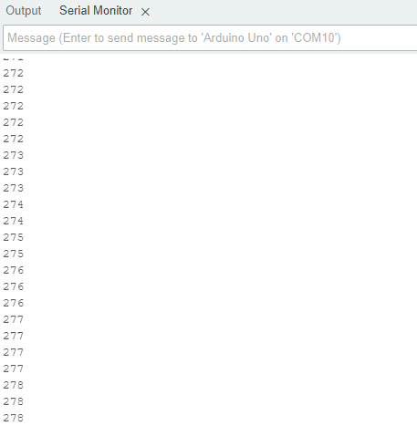

Componentes de um Sistema Fotovoltaico
Além dos módulos, um sistema fotovoltaico completo inclui:
Estrutura de fixação: responsável por sustentar os módulos, garantindo a inclinação correta e resistência ao vento.
Inversores ou microinversores: convertem a energia em corrente contínua para corrente alternada.

Cabos e conectores: realizam a interligação elétrica entre os módulos e os demais componentes.
String box e proteções: dispositivos de segurança que evitam sobrecargas e curtos-circuitos.
Controladores de carga e baterias (em sistemas isolados): armazenam energia para uso noturno ou em locais sem rede elétrica.
Medidores e sistemas de monitoramento: acompanham a geração de energia em tempo real.